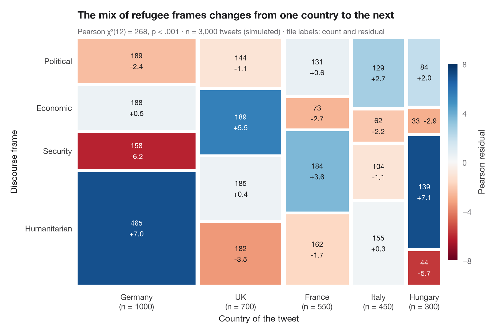

带 Pearson 残差的马赛克图
色块面积与单元格频数成正比，并按相对于独立性的 Pearson 残差着色。

马赛克图将二维列联表画成一个被切分成若干色块的正方形。列的宽度是第一个变量的边际比例，色块的高度是第二个变量的条件比例，因此每个色块的面积与其频数成正比。与 vcd::mosaic(shade = TRUE) 一样，颜色表示 Pearson 残差（观测值 − 期望值）/ √期望值：蓝色色块的推文数多于独立假设的预测，红色色块则较少；残差超过 ±2 或 ±4 的单元格正是驱动 χ² 的关键所在。
背景设定为 Stojkov 与 Warin（2023，Discourse & Communication）关于欧洲难民危机 Twitter 话语的研究。数据为用于说明的模拟数据，并非论文的数据或结果：3,000 条与难民相关的推文，每条带有来源国和一个主导话语框架（人道、安全、经济、政治）。色块用 ax.bar 手工绘制；期望频数由 scipy.stats.chi2_contingency 计算。
代码及图中文字均为英文。
import matplotlib.pyplot as plt
import numpy as np
import pandas as pd
from matplotlib.colors import TwoSlopeNorm
from scipy import stats
# Simulated data, set in the context of Stojkov & Warin (2023) [stojkov2023refugee]
# Simulated tweets: country of origin × dominant discourse frame, frame shares vary by country
rng = np.random.default_rng(2015)
frames = ["Humanitarian", "Security", "Economic", "Political"]
mix = {"Germany": ([0.46, 0.18, 0.18, 0.18], 1000), "UK": ([0.30, 0.26, 0.26, 0.18], 700),
"France": ([0.36, 0.26, 0.14, 0.24], 550), "Italy": ([0.32, 0.22, 0.16, 0.30], 450),
"Hungary": ([0.16, 0.44, 0.10, 0.30], 300)}
df = pd.DataFrame([(c, f) for c, (pr, n) in mix.items() for f in rng.choice(frames, n, p=pr)],
columns=["country", "frame"])
table = pd.crosstab(pd.Categorical(df.country, list(mix)), pd.Categorical(df.frame, frames))
obs = table.to_numpy()
# Chi-squared test and Pearson residuals
chi2, p, dof, expected = stats.chi2_contingency(obs, correction=False)
resid = (obs - expected) / np.sqrt(expected)
fig, ax = plt.subplots(figsize=(8.5, 5.6))
cmap = plt.get_cmap("RdBu") # red = fewer than expected, blue = more
norm = TwoSlopeNorm(0, vmin=-8, vmax=8)
gap = 0.012
widths = obs.sum(axis=1) / obs.sum()
x0 = 0
for i, w in enumerate(widths):
heights = obs[i] / obs[i].sum()
y0 = 0
for j, h in enumerate(heights):
ax.bar(x0, h - gap, width=w - gap, bottom=y0, align="edge",
color=cmap(norm(resid[i, j])), edgecolor="none")
sep = " " if h < 0.12 else "\n" # thin tiles get a one-line label
ax.text(x0 + (w - gap) / 2, y0 + (h - gap) / 2, f"{obs[i, j]}{sep}{resid[i, j].round(1) + 0:+.1f}", ha="center", va="center",
fontsize=9, linespacing=1.3, color="white" if abs(resid[i, j]) > 5 else "#1D1D1F")
y0 += h
ax.text(x0 + (w - gap) / 2, -0.03, f"{table.index[i]}\n(n = {obs[i].sum()})", ha="center", va="top",
fontsize=10, color="#3A3A3C")
x0 += w
# Row labels on the left, placed at the heights of the first column
y0 = 0
for j, h in enumerate(obs[0] / obs[0].sum()):
ax.text(-0.015, y0 + (h - gap) / 2, table.columns[j], ha="right", va="center", fontsize=10, color="#3A3A3C")
y0 += h
sm_ = plt.cm.ScalarMappable(norm=norm, cmap=cmap)
cb = fig.colorbar(sm_, ax=ax, shrink=0.8, pad=0.02, ticks=[-8, -4, 0, 4, 8])
cb.set_label("Pearson residual", color="#3A3A3C")
cb.outline.set_visible(False)
ax.set_xlim(0, 1 - gap); ax.set_ylim(0, 1 - gap)
ax.axis("off")
ax.text(0.5, -0.15, "Country of the tweet", transform=ax.transAxes, ha="center", fontsize=11)
ax.text(-0.19, 0.5, "Discourse frame", transform=ax.transAxes, rotation=90, va="center", fontsize=11)
ax.set_title("The mix of refugee frames changes from one country to the next", pad=26)
ax.text(0, 1.02, f"Pearson χ²({dof}) = {chi2:.0f}, p < .001 · n = {obs.sum():,} tweets (simulated) · "
"tile labels: count and residual", transform=ax.transAxes, fontsize=9.5, color="#6E6E73")
plt.show()
图表使用了可选的 PyStatlas 样式：添加 plt.style.use("pystatlas.mplstyle") 即可完全还原其外观。
数据来源
- Simulated data. Simulated data with a fixed random seed, created for this example.
No real respondents, documents or measurements: the numbers only illustrate how the chart and its statistics work. - Stojkov & Warin (2023), the refugee crisis on Twitter. Stojkov, A., & Warin, T. (2023). Discursive dynamics and local contexts on Twitter: The refugee crisis in Europe. Discourse & Communication, 17(3), 354–380. https://doi.org/10.1177/17504813231155739
The example is set in the context of this paper; unless its description says otherwise, the numbers are simulated and are not the paper's data or results.
这些示例用于说明统计方法。除条目另有说明外，其数值均为模拟数据，图表标题描述的是该图在这些模拟数据中呈现的内容——既不是所引论文的结论，也不是作者对实质问题的立场。关于结果、背景和数据，请以此处引用的论文为准。
如何引用
PyStatlas 由 Thierry Warin 创建并维护。如果它对你的工作有所帮助，敬请引用。
Warin, T. (2026). Mosaic plot with Pearson residuals. In PyStatlas: A Python Gallery of Statistical Graphics for the Social Sciences (Version 1.1.0) [Computer software]. https://warint.github.io/pystatlas/proportions-surveys/mosaic-plot/
@misc{warin2026statlas,
author = {Warin, Thierry},
title = {PyStatlas: A Python Gallery of Statistical Graphics for the Social Sciences},
year = {2026},
version = {1.1.0},
howpublished = {\url{https://warint.github.io/pystatlas/}},
note = {Source code: https://github.com/warint/pystatlas}
}